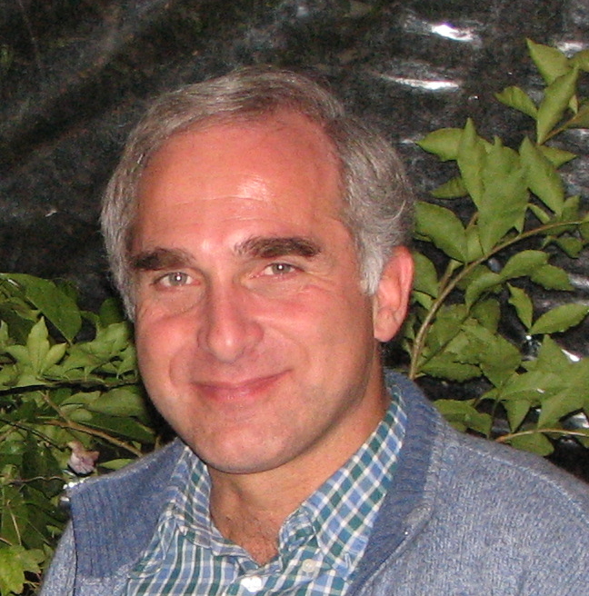

About the Author
Paolo Luchini is a scholar of fluid dynamics and laser physics, who developed CPL and its tools over a span of thirty years in his spare time, while at the same time he and his partners were actively using it for the numerical programming needs of many scientific projects.
Until 2020 the user base of CPL was minimal, but affectionate and persevering. Its author grew eventually persuaded to publish this website, with the hope (but with no warranty!) that CPL can be generally useful to other programmers.
The author can be reached as  If you develop your own application in CPL, a word will be appreciated.
If you develop your own application in CPL, a word will be appreciated.